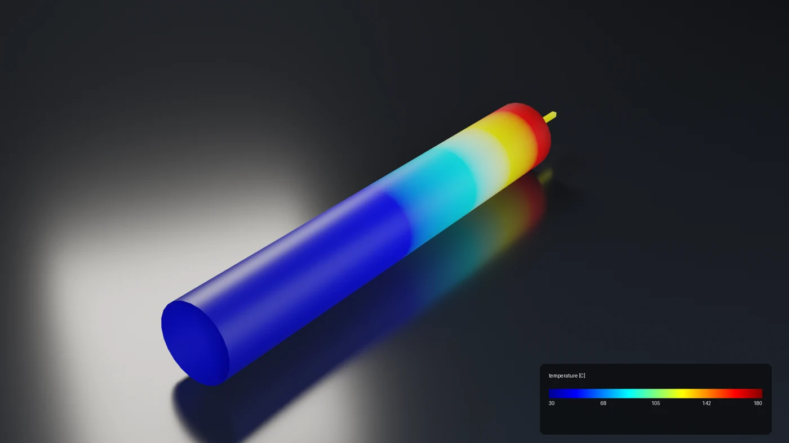

A digital twin usually dies in the same place: the beautiful result never reaches the environment where somebody will use it. The experiment attacks that on three fronts, and each one ends in a file another program can open.
The three paths
1. Export. The engineering twin becomes a Unity project folder, with the field coloured per vertex over time, sensors and a legend. The check is on the way out: 10 checks pass, the verifier that re-reads the folder reports zero problems, and the C# data layer re-reads 1,148 vertices.
2. Read back. A scene authored in Unity is read, receives checked physics (10 checks, all passing) and leaves as a 34 kB OpenUSD layer with 3 time-sampled attributes and the UsdPhysics schema.
3. Talk. An HTTP bridge the runtime calls while the game runs: POST a case, get back the field, the checks and the decision.

The numbers
The bridge makes the round trip for one job in 23.1 ms (median of five calls), returning the field and the checks. In the refusal test, a design peaking at 300 MPa against a 250 MPa yield is rejected inside the bridge itself, and the twin it saves comes back with zero problems. The field surrogate closes at 0.167% relative L2, with a heat-equation residual of 0.031 against a 0.05 tolerance.
And the detail that matters: the first training attempt, at 0.248% L2, was rejected by the residual check, and the training was redone. It is the same criterion as the rest of the product, applied where nobody expects it, which is inside a game engine.
Why the bridge is the point
Exporting is a photograph. The bridge is what keeps the twin valid when the case changes: the runtime asks, receives the field together with the checks, and the decision travels with the number instead of staying in the report of whoever ran it.
What was not proven
Latency on a real network, a large mesh and a long play session are not measured here, and the article does not estimate them. What is measured is the format closing the loop, the physics surviving the round trip, and the check running inside the loop.